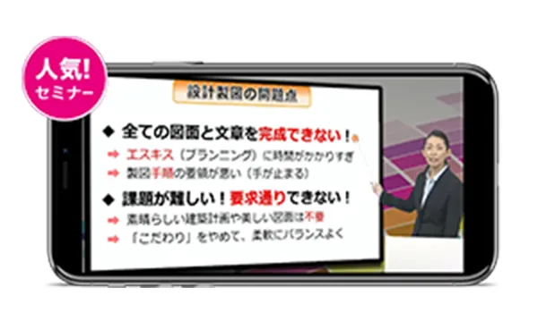

登録は簡単30秒／自動契約・更新はありません
学科も製図も、まずは実際の講座で確認できる無料お試し
VOICE スタディングで一級建築士 2023年度合格者が続々！

今、無料お試し
いただいた方だけの
3大特典
-
 建築士まるわかり
セミナー- ＜ガイド内容＞
- ● 試験の概要と対策
● スタディング式「製図対策」
● 合格するためのルールなど
-
初回講座の全ての機能を
利用期限なく体験- ＜初回講座の内容(一例)＞
- ● 基本講座（動画/音声、テキスト）
● スマート問題集
● セレクト過去問集
● 製図講座（動画・音声）
-
本講座申込時に使える
10%OFFクーポンスタディング一級建築士の本講座お申し込み時にご利用いただける、電子割引チケットをご提供します。
登録は簡単30秒／自動契約・更新はありません
学科も製図も、まずは実際の講座で確認できる無料お試し
01
学科も製図も過去問も、
合格に必要十分な
インプットとアウトプットが
オンラインでできる。
幅広い学習範囲の理解が必要な一級建築士の試験に対応できるよう、過去問や合格者学習法を徹底分析し、効率的なインプットとアウトプットを繰り返します。
学科から製図対策・過去問まで、
合格に必須の内容をすべて盛り込んだカリキュラムで学べる。
!合格基準点90点の試験に対し、93点以上獲得を目指した必要十分の学習内容
単元ごとに素早く
インプットし、演習や過去問で
十分なアウトプットを繰り返せる。
!インプット後すぐアウトプットできるから知識が定着
※上記は2022年7月時点での詳細となります。実際の講座数や問題数については、変更される場合があります。
17年分以上の過去問分析からわか
った、試験合格に必要な範囲を効
率的に習得できる。
!試験問題へのアプローチ方法、解法をマスター
製図の実践ノウハウを学ぶことで、
多く方が陥る「時間内に描ききれない」を払拭できる。
!製図の作成手順を９ステップに分解して速く書くコツを説明
02
学習フローとAIを活用した
復習問題で、学習順に迷わ
ず合格に向かって効率学習
ができる。
幅広い出題範囲を効率的に学べるよう、スタディングではAIを活用し、一人ひとりに最適な学習内容を提供します。
今日やるべきことを学習フローが
提案してくれるから、講義を見る
順や過去問を解くタイミングも迷
わない。
!合格者の学習法から導き出した最適な順で学べる
AIがあなたが復習すべき問題を
自動出題してくれるから、苦手
問題に注力できる。
!解答にかかった時間や過去の正誤履歴も確認できる
※AI問題復習。特許第7112694号
学習中のわからないことはすぐ
“AI検索”。テキストだけでなく、
動画、問題集、メモなど全コンテ
ンツから最適な情報を探せる。
!受講者の評価から高評価のコンテンツを上位表示
03
一級建築士合格に必要な内容が
揃って99,000円※。
スマホ中心の学習なら自分の
ペースで自由に学べる。
1級建築士学科・製図総合コースは業界最安級の良心価格。しかも、全内容がスマホ中心のオンライン講座だから、スキマ時間を使って、自分のペースでいつでもどこでも学べる。
学科＋製図を学べて99,000円※。
予備校などに比べて低価格で始め
られます。
※一級建築士 学科・製図総合コース一括払い・税込の場合
※同種の資格講座を提供している業者のうち当社が販売開始時点で調査した範囲での比較
スタディングの講義は全てオン
ライン。動画は1講義5分~15分
程度なので、スキマ時間で学習
を繰り返せる。
豊富な図表を駆使したわかりやすい講義だから、
テキストではわかりづらいことも理解できる。
!ダウンロード、倍速視聴も可能！
今、無料お試し
いただいた方だけの
3大特典
-
建築士まるわかり
セミナー- ＜ガイド内容＞
- ● 試験の概要と対策
● スタディング式「製図対策」
● 合格するためのルールなど
-
初回講座の全ての機能を
利用期限なく体験- ＜初回講座の内容(一例)＞
- ● 基本講座（動画/音声、テキスト）
● スマート問題集
● セレクト過去問集
● 製図講座（動画・音声）
-
本講座申込時に使える
10%OFFクーポンスタディング一級建築士の本講座お申し込み時にご利用いただける、電子割引チケットをご提供します。
登録は簡単30秒／自動契約・更新はありません
学科も製図も、まずは無料お試し